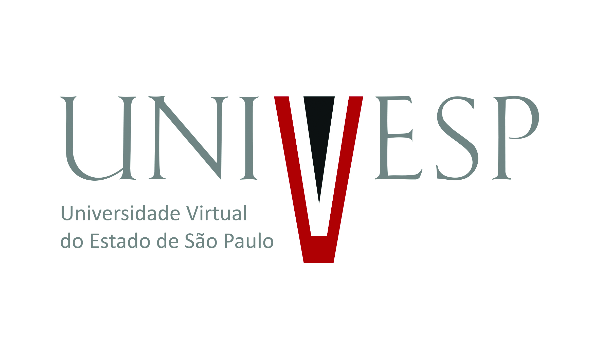
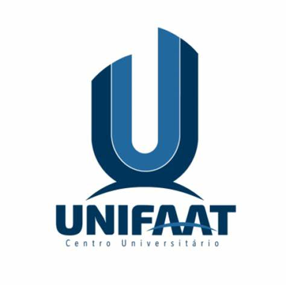
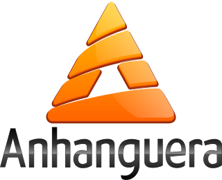
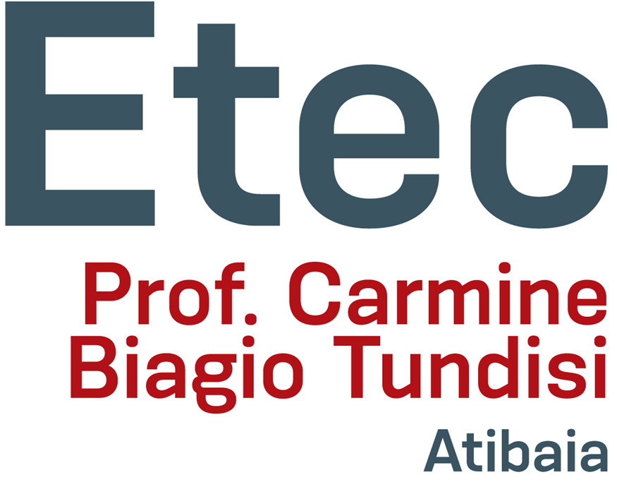

Formação Acadêmica
-  Bacharel em Ciência de Dados - Univesp, 2023
-  Bacharel em Administração de Empresas - UniFaat, 2013
- Pós-Graduado em Desenvolvimento de Sistema Java - Faculdade Descomplica, 2021
-  Pós-Graduado em Gestão de Projetos - Anhanguera Uniderp, 2020
- Pós-Graduado em Banco de Dados - Fasul Educacional Ead Ltda, 2022
- MBA em Gestão de Pessoas e Processos - FGV, 2023
- Ensino Médio - Escola Estadual Major Juvenal Alvim, 1999
-  Técnico em Informática - Escola Técnica Estadual Carmine Biagi Tundisi, 2018
Experiência Profissional
Habilidades e Competências
Relacionamento
Pensamento criativo
Autoconfiança
Proatividade
Trabalho em equipe
Conhecimento técnico e aprendizado contínuo
Liderança
Foco em resultados
Pensamento de dono
Inteligência emocional
Flexibilidade e capacidade de se adaptar a mudanças
Resiliência profissional
Capacidade de trabalhar remotamente
Comprometimento
Capacidade de inovação
Certificações
CRISC
ISO 27001
COBIT
Certificado Java da Oracle
Agile Scrum Master
AWS Certified Developer